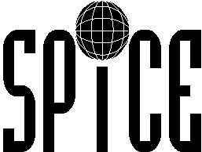
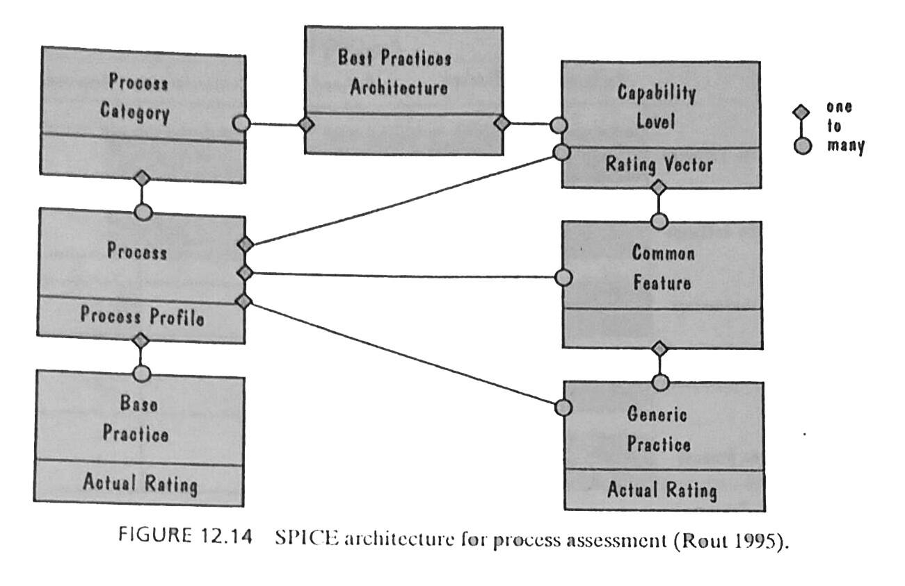
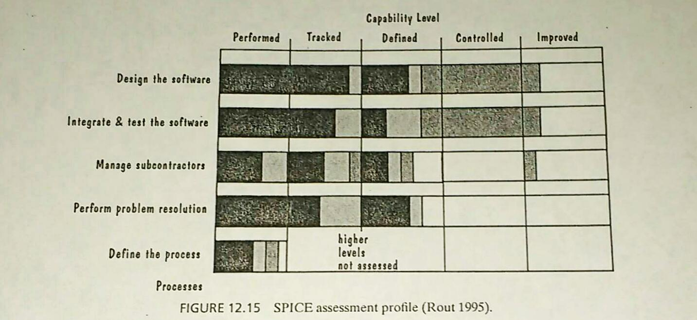

El modelo CMM ha generado una gran cantidad de metodologías para la evaluación de procesos, desde Trillium (desarrollado por las compañías de telecomunicaciones Canadienses) hasta BOOTSTRAP (una extensión de CMM para desarrollo por la comunidad europea del proyecto ESPRIT). Este crecimiento y la aplicación de técnicas para la evaluación procesos comerciales sensibles llevó al departamento de defensa del Reino Unido a proponer un estándar internacional en 1995, SPICE.
Harmonización del CMM
Similar a CMM, SPICE está recomendado para procesos y determinación de capabilidad. SPICE está pensado para arquitecturas que definen las prácticas y los procesos deseados. Existen dos diferentes tipos de prácticas:
- Prácticas base que son esenciales para un proceso específico.
- Prácticas genéricas que consta de la institucionalización o implementación de un proceso en forma general
La siguiente imagen ilustra cómo la arquitectura de SPICE une estas dos prácticas. La parte de la izquierda del diagrama representa las prácticas funcionales implicadas en el desarrollo de software. Esta forma funcional considera cinco actividades. 
- Suministrado al cliente: proceso que afecta al cliente directamente, apoya el desarrollo y entregas del producto al cliente. Se asegura de la correcta operación y uso.
- Ingeniería: proceso que especifica, implementa o mantiene el sistema y su documentación.
- Proyecto: proceso que establece el proyecto, coordina o maneja los recursos, o provee servicios al cliente.
- Soporte: proceso que habilita o apoya en el rendimiento de los otros procesos.
- Organización: proceso que establece las metas del negocio y desarrolla recursos para alcanzar esas metas.
Actividades de la forma funcional
La parte derecha del diagrama hace alusión al parte de la administración; las prácticas genéricas, aplicables a todos los procesos. Están organizadas en seis niveles de capabilidad que son los siguientes:
- Sin realizar: falla en la realización y sin productos identificables.
- Realizado informalmente: sin planeación ni seguimiento, dependiente del conocimiento individual y de los productos de trabajo identificables.
- Planeado y seguido: verificado acorde con procedimientos específicos, productos de trabajo con forme a estándares y requerimientos específicos
- Bien definido: procesos bien definidos utilizando una versión aprobada, adaptada y documentada del proceso estándar
- Controlado cualitativamente: Medidas detalladas del rendimiento, predicción de capabilidad, administración de objetivos y productos de trabajo evaluados cualitativamente.
- Mejoramiento continuo: Metas cualitativas de eficacia y eficiencia basados en los objetivos del negocio, re-alimentación cuantitativa para definir procesos y probar nuevas ideas.
Prácticas genéricas
Resultados
Un reporte de evaluación es un perfil; cada área de procesos es evaluada y reportada para ser categorizada en alguno de los seis niveles de capabilidad. La siguiente figura ejemplifica cómo es reportado un perfil. El sombreado indica el grado de cumplimiento de las actividades por cada nivel.
Mientras que el CMM está orientado a las organizaciones, SPICE está orientado a los procesos. Además, la evaluación de SPICE es cuidadosamente descrita para evitar subjetividad en los reportes generados.